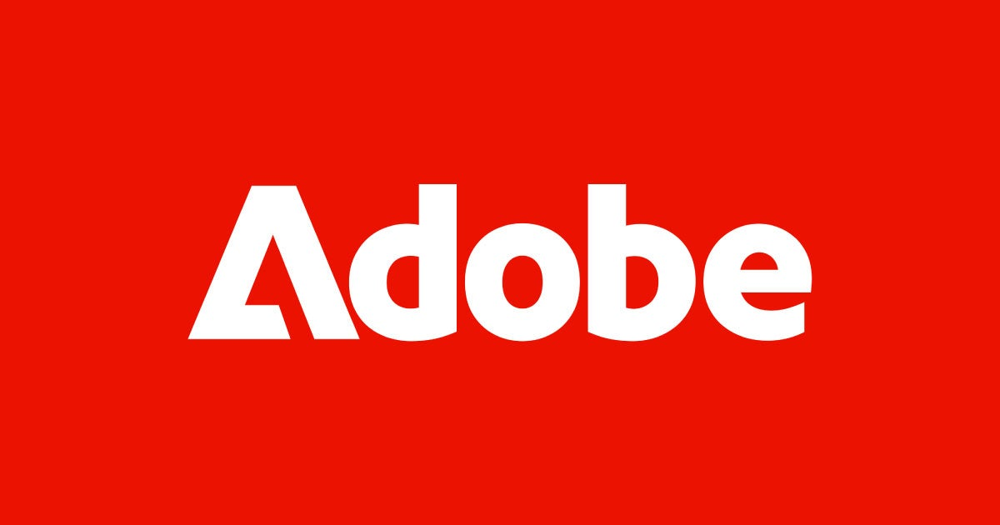
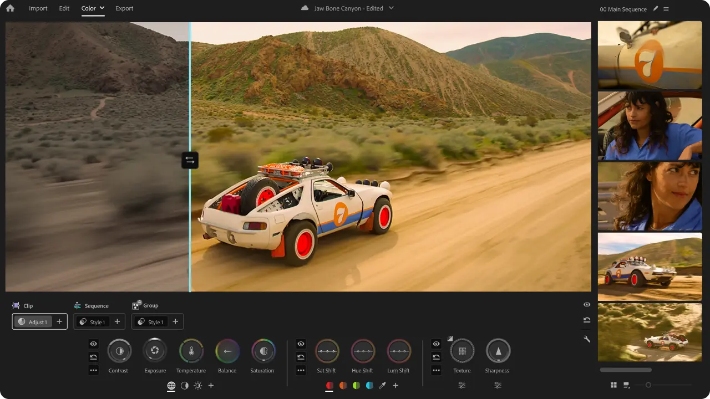
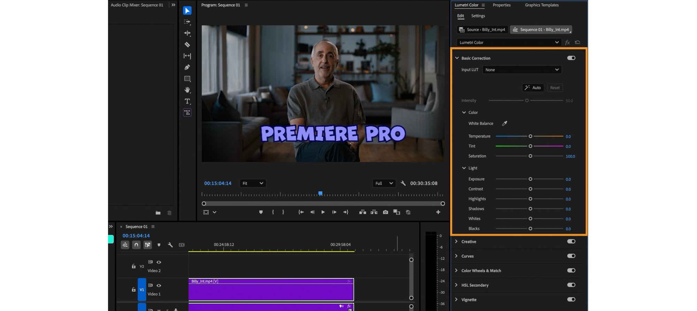
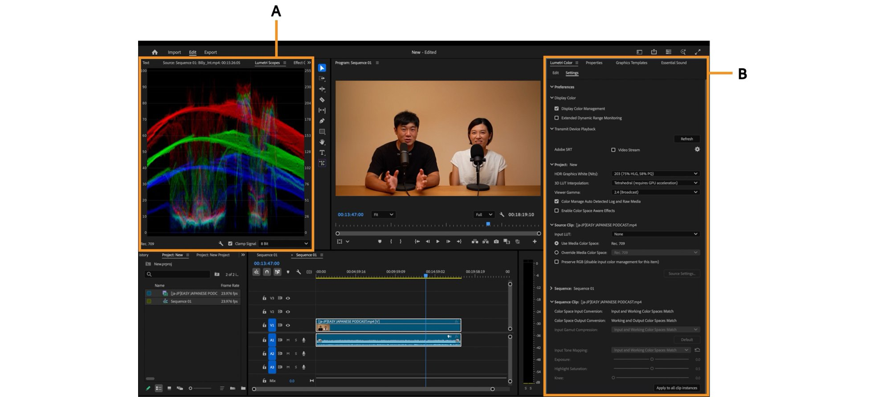
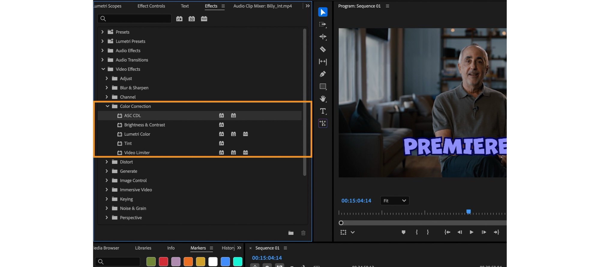
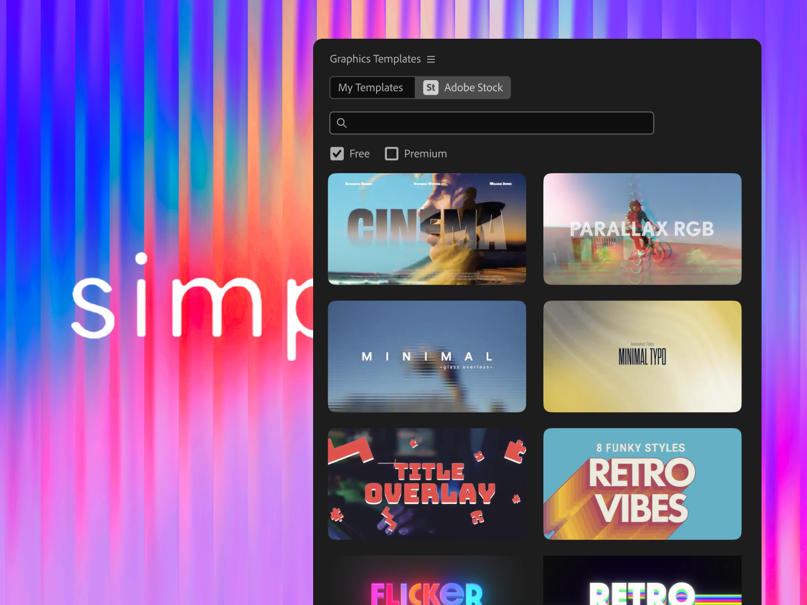
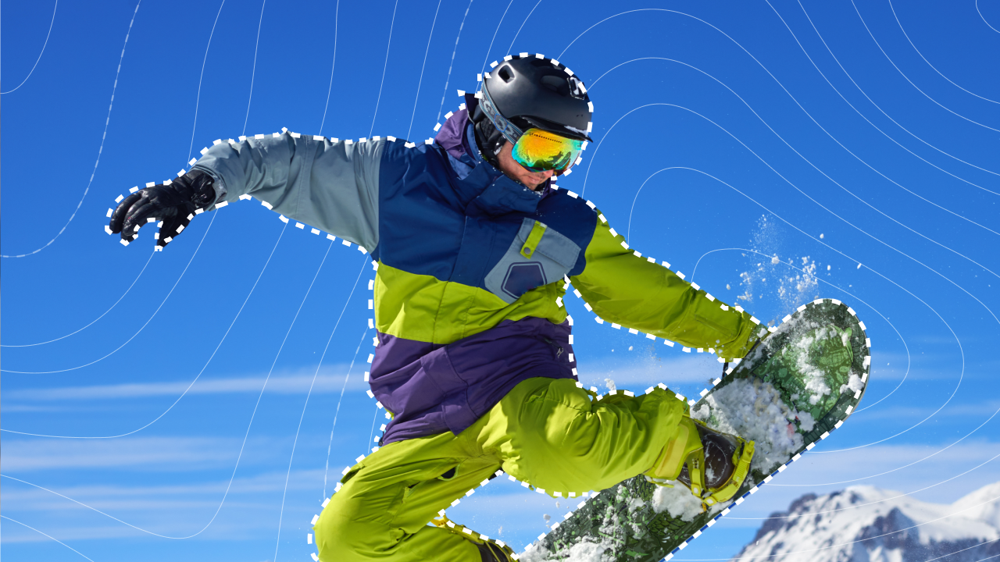
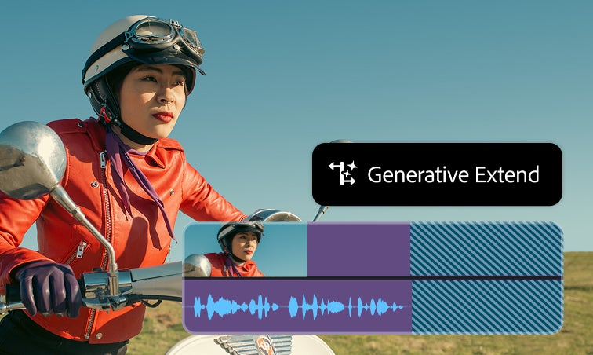

FMC × Adobe · Color Roadshow
Adobe asset board — 16 collected
Everything usable found on the open web, organized by clearance level. All hi-res originals live in ~/Downloads/adobe-color-roadshow/adobe-assets/.
Before publishing: Adobe's logo/icon rules require written authorization for logo + icon use — which the FMC×Adobe partnership provides the path for. Ask Tyree to request the official partner brand kit from the Adobe contact and confirm logo usage in writing. Building locally with these now is fine; nothing publishes without that sign-off.
Logos & marks — official Adobe CDN files




Premiere Pro color — in action (official product imagery)







Not collected (needs accounts / people)
COLLECTED 2026-07-19 · SOURCES: ADOBE.COM CDN · HELPX/SCENE7 · WIKIMEDIA (BACKUP) · ALL LOCAL, NOTHING PUBLISHED